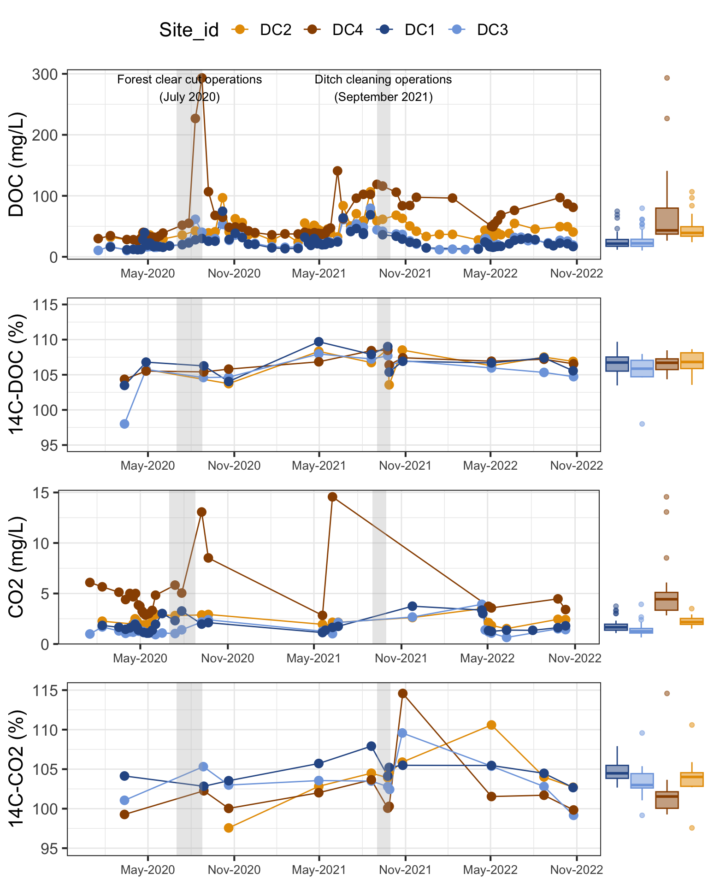

![]()

üëà see code here
# Define operation periods for treatments::::::::::::::::::::::::::::::::::::::::::
clearcut_start <- as.Date("2020-07-01")
clearcut_end <- as.Date("2020-08-25")
ditch_cleaning_start <- as.Date("2021-09-01")
ditch_cleaning_end <- as.Date("2021-09-30")
# Make the precipitation graph :::::::::::::::::::::::::::::::::::::::::::::::::::::
precipitation= ggplot(DC_Q %>%
filter(Site_id %in% c("DC1")),
aes(y = P, x = as.Date(Date), color = Site_id)) +
# Add gray background bars for operations
annotate("rect",
xmin = clearcut_start, xmax = clearcut_end,
ymin = -Inf, ymax = Inf, fill = "gray70", alpha = 0.3) +
annotate("rect",
xmin = ditch_cleaning_start, xmax = ditch_cleaning_end,
ymin = -Inf, ymax = Inf, fill = "gray70", alpha = 0.3) +
geom_bar(stat = 'identity', width=0.2) +
labs( y= "Precipitation (mm/day)") +
scale_y_reverse()+
scale_color_manual(values=site_colors_6)+ #"
scale_x_date(limits=c(as.Date("2020-01-01"), as.Date("2022-11-01")),
date_labels = "%b-%Y", date_breaks = "6 months") +
labs(y = "P (mm/d)", x = "Date") +
theme(legend.position = "none", axis.title.x = element_blank())
# Make Hydrograph :::::::::::::::::::::::::::::::::::::::::::::::::::::
hydrograph= ggplot(DC_Q %>%
filter(Site_id %in% c("DC2", "DC3")),
aes(y = q_md*1000, x = as.Date(Date), color = Site_id)) +
# Add gray background bars for operations
annotate("rect",
xmin = clearcut_start, xmax = clearcut_end,
ymin = -Inf, ymax = Inf,
fill = "gray70", alpha = 0.3) +
annotate("rect",
xmin = ditch_cleaning_start, xmax = ditch_cleaning_end,
ymin = -Inf, ymax = Inf,
fill = "gray70", alpha = 0.3) +
# Add the discharge lines
geom_line() +
scale_color_manual(values=site_colors_6)+ #"
# Add text labels for operations
annotate("text", x = clearcut_start + (clearcut_end - clearcut_start)/2, y = Inf,
label = "Forest clear cut operations\n(July 2020)",
vjust = 1.2, hjust = 0.5, size = 3.5, color = "black") +
annotate("text", x = ditch_cleaning_start + (ditch_cleaning_end - ditch_cleaning_start)/2, y = Inf,
label = "Ditch cleaning operations\n(September 2021)",
vjust = 1.2, hjust = 0.5, size = 3.5, color = "black") +
scale_x_date(limits=c(as.Date("2020-01-01"), as.Date("2022-11-01")),
date_labels = "%b-%Y", date_breaks = "6 months") +
labs(y = "q (mm/d)", x = "Date", color = "Stream") +
theme(legend.position = "none", axis.title.x = element_blank())
ggarrange(precipitation, hydrograph,
ncol=1, align="v")